Candidate List 20261030Last night — ZTF: 0 passed basic cuts (0 young) · LSST: 7,639 passed basic cuts (1,998 young)Previous Day Next Day
Section 1: New Sources (age<1d) Section 2: Old (1-5d) sources observed last nightplaceholder
Section 1: New Afterglow/FBOT Cands Last Night (22)
1. [LSST] 171141185846902819 (Afterglow?) [Back to Top] [Fritz Alert] [Fritz Source] [Lasair]RA, Dec: 340.2527, -10.64481 22h41m0.65s, -10d-38m-41.33sGalactic (l, b): 54.85149, -55.18939 WARNING: -2.14 deg from ecliptic plane ext(g-r) = 0.076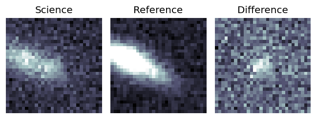
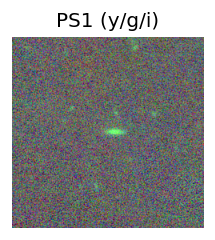
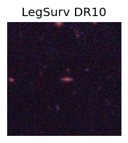
TESS: Sectors [42 70 92]
PS1: 0 sources in 3 arcsec
LegacySurvey: 1 sources in 3 arcsec Closest: d = 1.79 arcsec, 255.7 deg (east of north) photoz=0.25 (68% bounds 0.23, 0.28), type=EXP peak abs mag (ext. corrected) = -18.74 (68% bounds -18.51, -19.01)
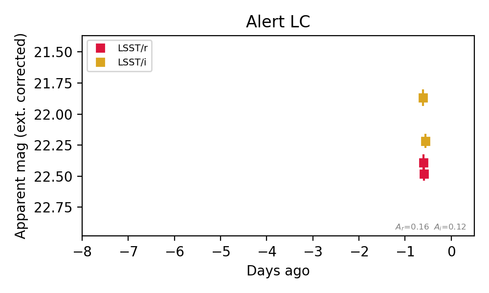
Extinction-corrected ri color:
From alerts: 0.38 +/- 0.06 mag
Consistent with synchrotron, g-r>0!
Rise Rate:
Fade Rate:
i: 7.37 mag/day
2. [LSST] 171141185993179184 (Afterglow?) [Back to Top] [Fritz Alert] [Fritz Source] [Lasair]RA, Dec: 340.40763, -9.78442 22h41m37.83s, -9d-47m-3.93sGalactic (l, b): 56.25063, -54.84292 WARNING: -1.4 deg from ecliptic plane ext(g-r) = 0.063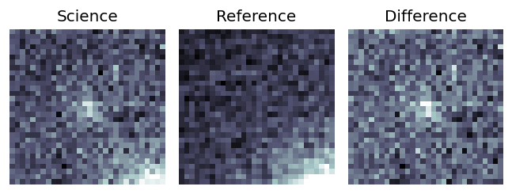
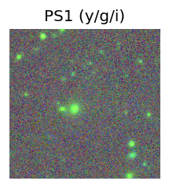
TESS: Sectors [70 92]
NED host (10 arcsec):Found WISEA J224138.17-094706.2 (G, 5.6″); NED spec-z: z=0.4356 [zflag SLS]; peak abs mag = -19.62
NED photo-z only: [SHK2013] J224138.46-094706.2 (G, 9.6″) z=0.4350 [zflag UUN] — not used for peak abs mag
PS1: 0 sources in 3 arcsec
LegacySurvey: 1 sources in 3 arcsec Closest: d = 4.29 arcsec, 305.8 deg (east of north) photoz=1.01 (68% bounds 0.39, 1.72), type=PSF peak abs mag (ext. corrected) = -21.83 (68% bounds -19.32, -23.27)
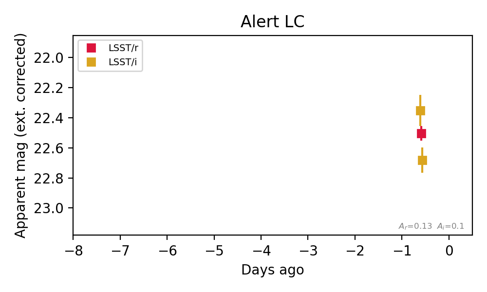
Extinction-corrected ri color:
From alerts: -0.04 +/- 0.08 mag
Consistent with synchrotron, g-r>0!
Rise Rate:
Fade Rate:
i: 7.02 mag/day
3. [LSST] 171141186180349964 (Afterglow?) [Back to Top] [Fritz Alert] [Fritz Source] [Lasair]RA, Dec: 343.89827, -3.68983 22h55m35.58s, -3d-41m-23.38sGalactic (l, b): 68.13113, -53.74798 WARNING: 2.93 deg from ecliptic plane ext(g-r) = 0.06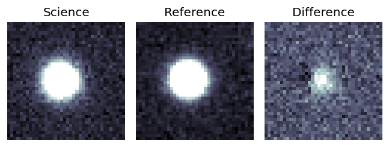
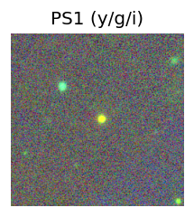
TESS: Sectors [42 70 92]
PS1: 0 sources in 3 arcsec
LegacySurvey: 1 sources in 3 arcsec Closest: d = 1.00 arcsec, 256.9 deg (east of north) photoz=1.9 (68% bounds 0.26, 3.04), type=PSF peak abs mag (ext. corrected) = -25.05 (68% bounds -19.86, -26.29)
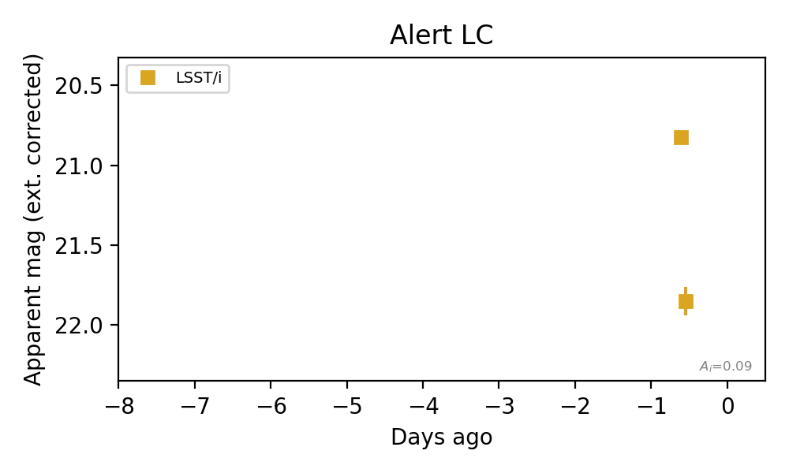
Rise Rate:
Fade Rate:
i: 15.09 mag/day
4. [LSST] 171141186180874276 (Afterglow?) [Back to Top] [Fritz Alert] [Fritz Source] [Lasair]RA, Dec: 343.65153, -4.07249 22h54m36.37s, -4d-4m-20.97sGalactic (l, b): 67.37303, -53.82829 WARNING: 2.67 deg from ecliptic plane ext(g-r) = 0.054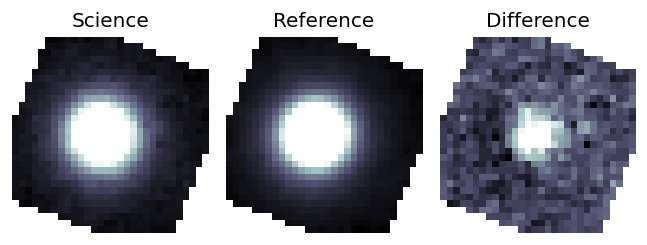
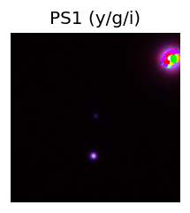
TESS: Sectors [42 70 92]
SDSS (<15 kpc):Found SDSS phot-z: z=0.31; peak abs mag = -21.26
PS1: 0 sources in 3 arcsec
LegacySurvey: 1 sources in 3 arcsec Closest: d = 0.09 arcsec, 78.9 deg (east of north) photoz=0.28 (68% bounds 0.21, 0.34), type=REX peak abs mag (ext. corrected) = -21.03 (68% bounds -20.27, -21.49)
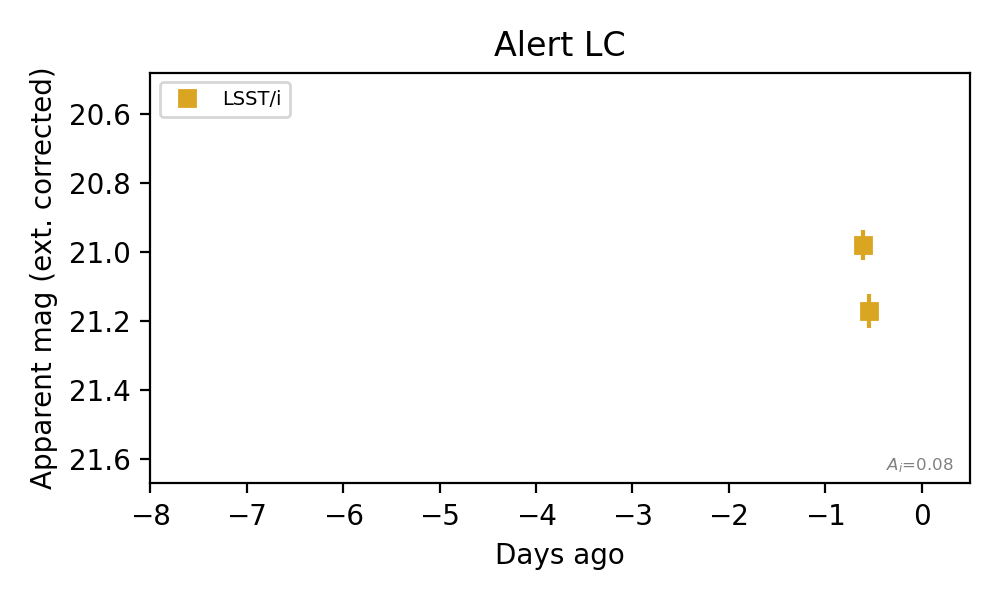
Extinction-corrected gr color:
From alerts: 0.14 +/- 99 mag
Rise Rate:
Fade Rate:
r: 0.0 mag/day
i: 2.82 mag/day
5. [LSST] 171141186250604549 (Afterglow?) [Back to Top] [Fritz Alert] [Fritz Source] [Lasair]RA, Dec: 345.25641, -5.41072 23h 1m1.54s, -5d-24m-38.60sGalactic (l, b): 67.54426, -55.91134 WARNING: 0.82 deg from ecliptic plane ext(g-r) = 0.063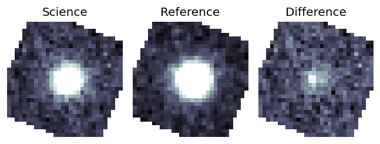
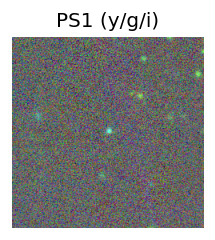
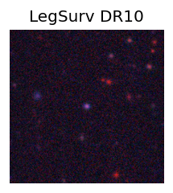
TESS: Sectors 70
PS1: 0 sources in 3 arcsec
LegacySurvey: 1 sources in 3 arcsec Closest: d = 0.08 arcsec, 219.1 deg (east of north) photoz=1.02 (68% bounds 0.85, 1.14), type=DEV peak abs mag (ext. corrected) = -22.13 (68% bounds -21.62, -22.41)
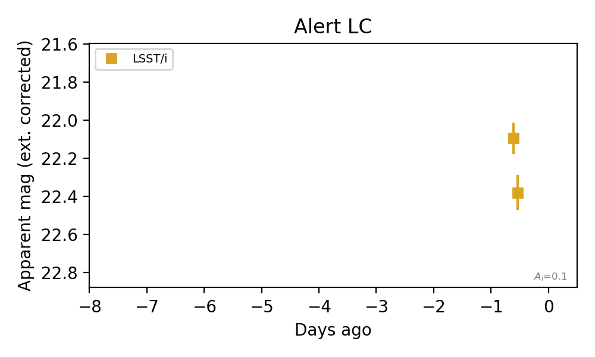
Rise Rate:
Fade Rate:
i: 4.17 mag/day
6. [LSST] 171141189288853536 (Afterglow?) [Back to Top] [Fritz Alert] [Fritz Source] [Lasair]RA, Dec: 344.51876, -3.98466 22h58m4.50s, -3d-59m-4.77sGalactic (l, b): 68.48988, -54.40059 WARNING: 2.42 deg from ecliptic plane ext(g-r) = 0.063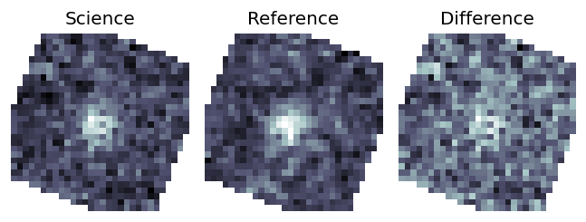
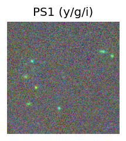
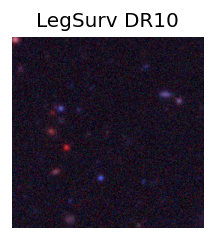
TESS: Sectors [42 70 92]
PS1: 0 sources in 3 arcsec
LegacySurvey: 1 sources in 3 arcsec Closest: d = 0.07 arcsec, 113.6 deg (east of north) photoz=0.88 (68% bounds 0.6, 1.37), type=PSF peak abs mag (ext. corrected) = -20.43 (68% bounds -19.4, -21.6)
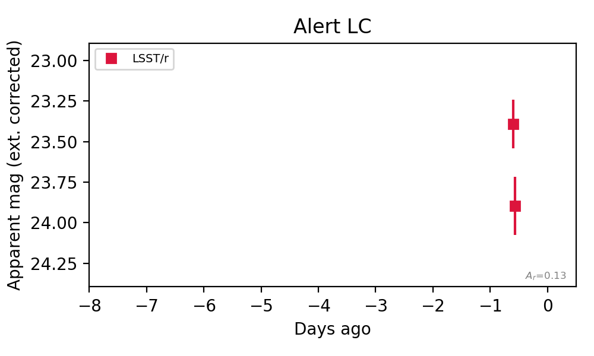
Rise Rate:
Fade Rate:
r: 16.65 mag/day
7. [LSST] 171141189754945639 (Afterglow?) [Back to Top] [Fritz Alert] [Fritz Source] [Lasair]RA, Dec: 344.75164, 1.11333 22h59m0.39s, 1d 6m48.00sGalactic (l, b): 74.61418, -50.89733 ext(g-r) = 0.065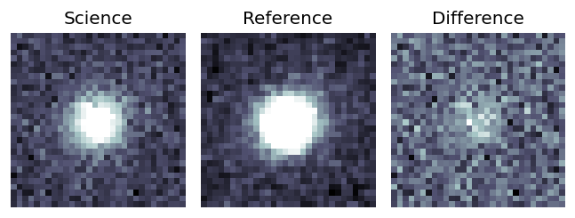
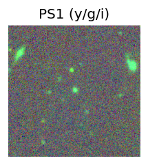
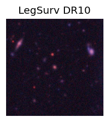
TESS: Sectors [42 70 92]
SDSS (<15 kpc):Found SDSS phot-z: z=0.45; peak abs mag = -19.67
PS1: 0 sources in 3 arcsec
LegacySurvey: 1 sources in 3 arcsec Closest: d = 0.03 arcsec, 150.4 deg (east of north) photoz=0.34 (68% bounds 0.32, 0.39), type=REX peak abs mag (ext. corrected) = -18.97 (68% bounds -18.77, -19.29)
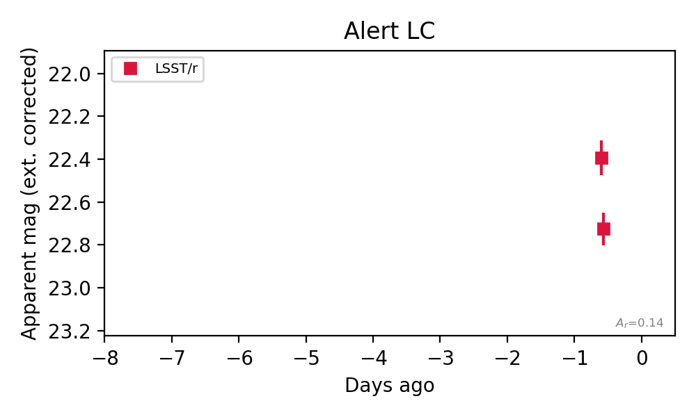
Rise Rate:
Fade Rate:
r: 11.64 mag/day
8. [LSST] 171141192106901670 (FBOT?) [Back to Top] [Fritz Alert] [Fritz Source] [Lasair]RA, Dec: 345.4837, -8.90431 23h 1m56.09s, -8d-54m-15.51sGalactic (l, b): 62.93206, -58.36129 WARNING: -2.49 deg from ecliptic plane ext(g-r) = 0.042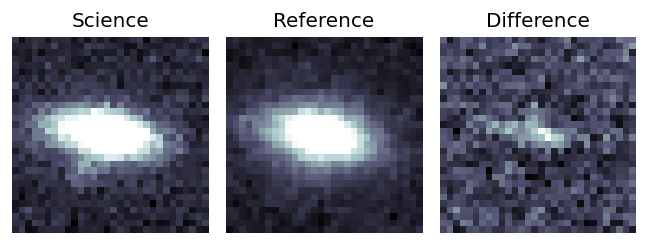
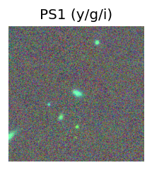
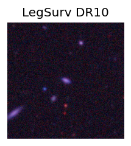
TESS: Sectors [42 70 92]
SDSS (<15 kpc):Found SDSS phot-z: z=0.14; peak abs mag = -20.24
PS1: 0 sources in 3 arcsec
LegacySurvey: 1 sources in 3 arcsec Closest: d = 0.16 arcsec, 232.3 deg (east of north) photoz=0.11 (68% bounds 0.09, 0.15), type=SER peak abs mag (ext. corrected) = -19.77 (68% bounds -19.32, -20.55)
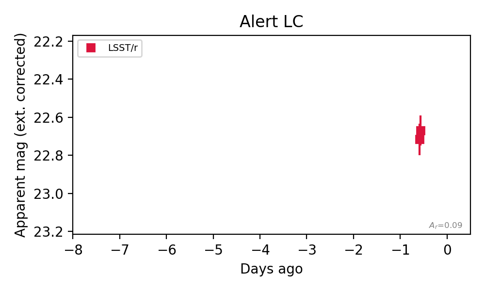
Rise Rate:
r: 0.73 mag/day
Fade Rate:
r: 0.02 mag/day
9. [LSST] 171141192106901695 (Afterglow?) [Back to Top] [Fritz Alert] [Fritz Source] [Lasair]RA, Dec: 345.5059, -8.91821 23h 2m1.41s, -8d-55m-5.55sGalactic (l, b): 62.93754, -58.38709 WARNING: -2.52 deg from ecliptic plane ext(g-r) = 0.041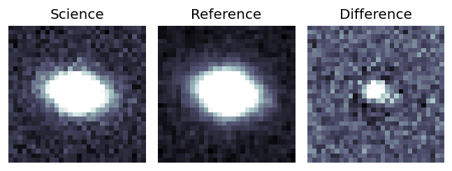
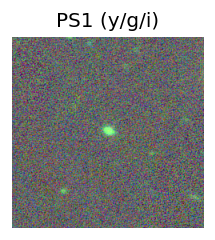
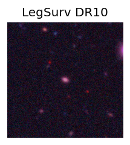
TESS: Sectors [42 70 92]
SDSS (<15 kpc):Found SDSS phot-z: z=0.22; peak abs mag = -18.14
PS1: 0 sources in 3 arcsec
LegacySurvey: 1 sources in 3 arcsec Closest: d = 0.02 arcsec, 36.5 deg (east of north) photoz=0.22 (68% bounds 0.2, 0.23), type=SER peak abs mag (ext. corrected) = -18.09 (68% bounds -17.92, -18.28)
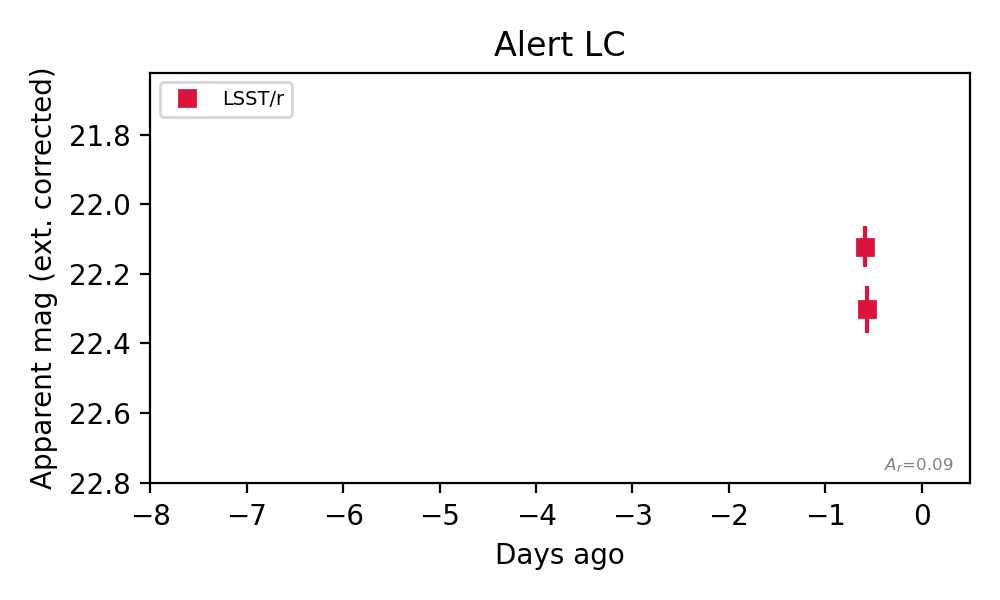
Rise Rate:
Fade Rate:
r: 8.16 mag/day
10. [LSST] 171141192107425910 (FBOT?) [Back to Top] [Fritz Alert] [Fritz Source] [Lasair]RA, Dec: 345.72171, -8.64764 23h 2m53.21s, -8d-38m-51.51sGalactic (l, b): 63.59471, -58.38264 WARNING: -2.35 deg from ecliptic plane ext(g-r) = 0.041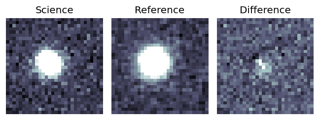
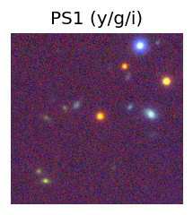
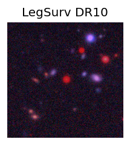
TESS: Sectors [42 70 92]
SDSS (<15 kpc):Found SDSS phot-z: z=0.24; peak abs mag = -17.85
PS1: 0 sources in 3 arcsec
LegacySurvey: 1 sources in 3 arcsec Closest: d = 0.89 arcsec, 286.6 deg (east of north) photoz=0.76 (68% bounds 0.18, 2.98), type=PSF peak abs mag (ext. corrected) = -20.86 (68% bounds -17.21, -24.48)
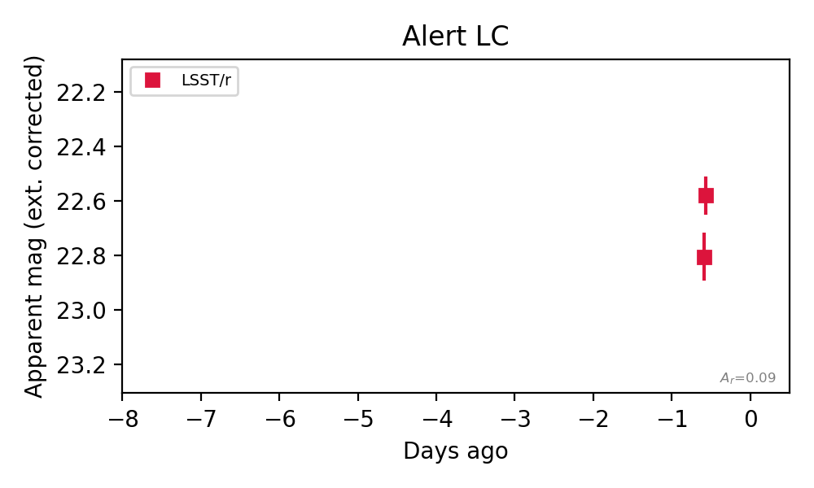
Rise Rate:
r: 10.19 mag/day
Fade Rate:
11. [LSST] 171141193218392153 (Afterglow?) [Back to Top] [Fritz Alert] [Fritz Source] [Lasair]RA, Dec: 350.85635, -10.57513 23h23m25.52s, -10d-34m-30.47sGalactic (l, b): 67.34041, -63.48703 ext(g-r) = 0.035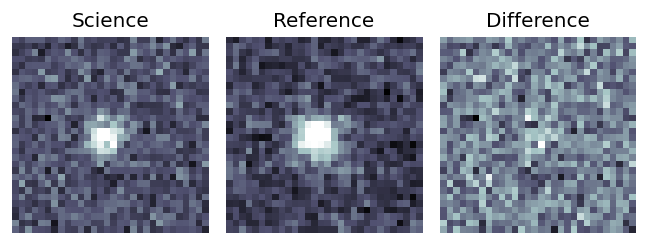
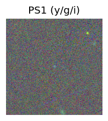
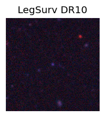
TESS: Sectors [ 2 29 42 70 92]
PS1: 0 sources in 3 arcsec
LegacySurvey: 1 sources in 3 arcsec Closest: d = 0.04 arcsec, 244.8 deg (east of north) photoz=1.62 (68% bounds 1.42, 1.83), type=PSF peak abs mag (ext. corrected) = -27.59 (68% bounds -27.25, -27.92)
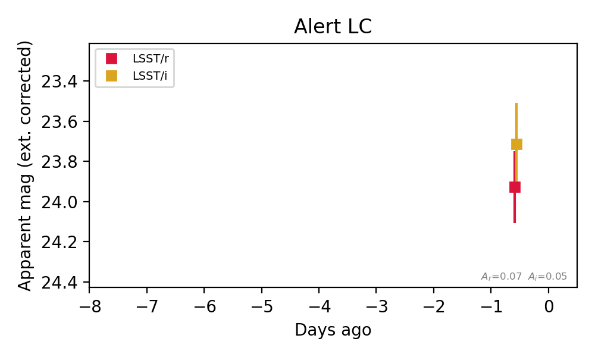
Extinction-corrected ri color:
From alerts: 0.22 +/- 0.27 mag
Consistent with synchrotron, g-r>0!
Rise Rate:
r: 2.08 mag/day
Fade Rate:
r: 0.0 mag/day
12. [LSST] 171141193226256606 (FBOT?) [Back to Top] [Fritz Alert] [Fritz Source] [Lasair]RA, Dec: 351.58065, -10.86223 23h26m19.36s, -10d-51m-44.02sGalactic (l, b): 67.93308, -64.2086 ext(g-r) = 0.035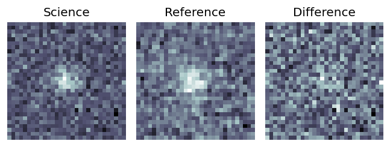
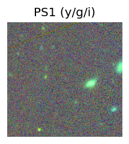
TESS: Sectors [ 2 29 42 70 92]
PS1: 0 sources in 3 arcsec
LegacySurvey: 1 sources in 3 arcsec Closest: d = 0.04 arcsec, 224.4 deg (east of north) photoz=1.41 (68% bounds 1.13, 1.69), type=REX peak abs mag (ext. corrected) = -25.07 (68% bounds -24.49, -25.55)
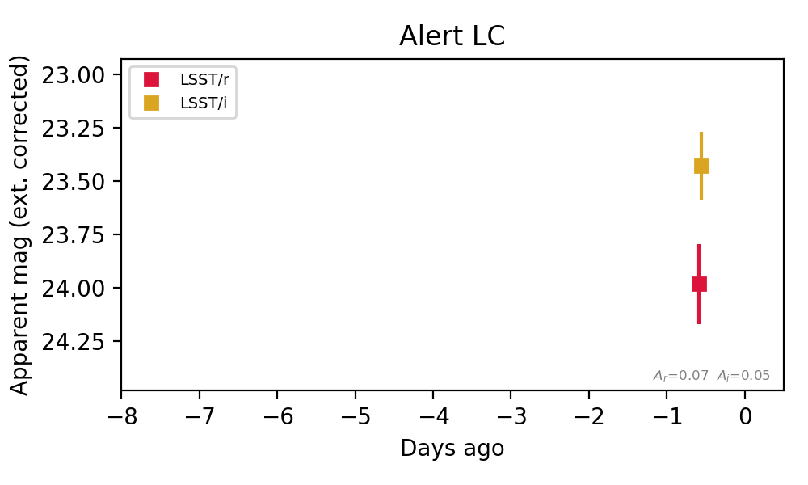
Extinction-corrected ri color:
From alerts: 0.55 +/- 0.25 mag
Consistent with synchrotron, g-r>0!
Rise Rate:
r: 0.24 mag/day
Fade Rate:
r: 0.0 mag/day
13. [LSST] 171141194368679961 (FBOT?) [Back to Top] [Fritz Alert] [Fritz Source] [Lasair]RA, Dec: 358.06111, -5.70028 23h52m14.67s, -5d-42m-1.00sGalactic (l, b): 86.96825, -64.35637 WARNING: -4.46 deg from ecliptic plane ext(g-r) = 0.031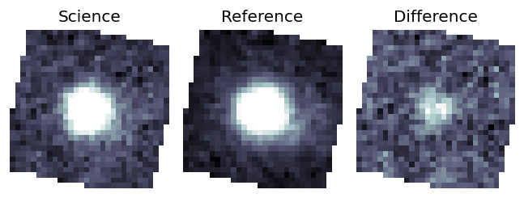
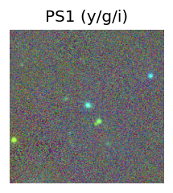
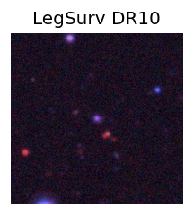
TESS: Sectors [42 70 92]
PS1: 0 sources in 3 arcsec
LegacySurvey: 1 sources in 3 arcsec Closest: d = 0.08 arcsec, 171.6 deg (east of north) photoz=0.57 (68% bounds 0.5, 0.66), type=REX peak abs mag (ext. corrected) = -23.78 (68% bounds -23.46, -24.18)
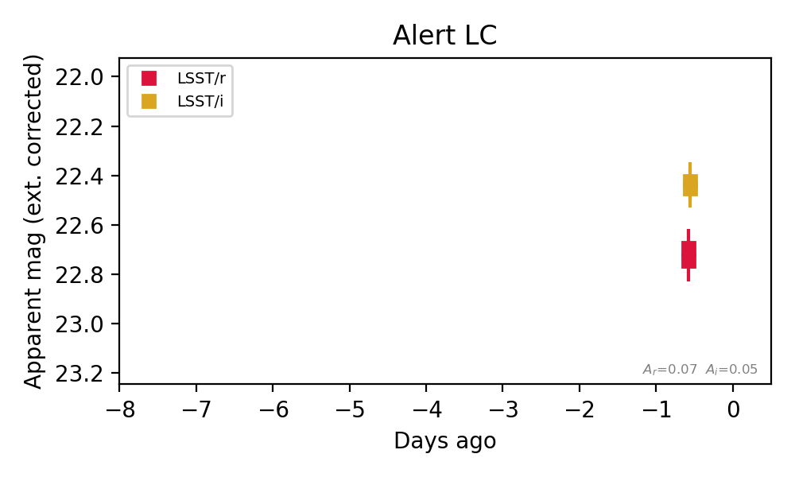
Extinction-corrected ri color:
From alerts: 0.28 +/- 0.08 mag
Consistent with synchrotron, g-r>0!
Rise Rate:
g: 0.71 mag/day
Fade Rate:
14. [LSST] 171141194636067002 (FBOT?) [Back to Top] [Fritz Alert] [Fritz Source] [Lasair]RA, Dec: 359.2031, -2.81378 23h56m48.74s, -2d-48m-49.60sGalactic (l, b): 92.3401, -62.39571 WARNING: -2.26 deg from ecliptic plane ext(g-r) = 0.05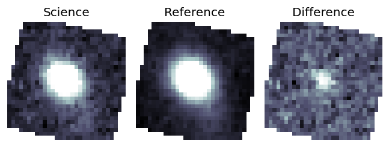
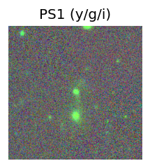
TESS: Sectors [42 70]
SDSS (<15 kpc):Found SDSS phot-z: z=0.35; peak abs mag = -22.17
PS1: 0 sources in 3 arcsec
LegacySurvey: 1 sources in 3 arcsec Closest: d = 0.07 arcsec, 138.0 deg (east of north) photoz=0.33 (68% bounds 0.29, 0.36), type=SER peak abs mag (ext. corrected) = -22.01 (68% bounds -21.66, -22.23)
Extinction-corrected ri color:
From alerts: -0.11 +/- 0.1 mag
Rise Rate:
r: 0.54 mag/day
Fade Rate:
r: 0.09 mag/day
15. [LSST] 171141194666475654 (Afterglow?FBOT?) [Back to Top] [Fritz Alert] [Fritz Source] [Lasair]RA, Dec: 357.73132, -4.35103 23h50m55.52s, -4d-21m-3.72sGalactic (l, b): 87.91379, -63.03239 WARNING: -3.09 deg from ecliptic plane ext(g-r) = 0.04
TESS: Sectors [42 70 92]
SDSS (<15 kpc):Found SDSS phot-z: z=0.38; peak abs mag = -24.04
PS1: 0 sources in 3 arcsec
LegacySurvey: 1 sources in 3 arcsec Closest: d = 0.13 arcsec, 254.7 deg (east of north) photoz=0.79 (68% bounds 0.7, 0.91), type=REX peak abs mag (ext. corrected) = -25.95 (68% bounds -25.65, -26.33)
Extinction-corrected gr color:
From alerts: 2.7 +/- 99 mag
Extinction-corrected ri color:
From alerts: 0.25 +/- 0.2 mag
Consistent with synchrotron, g-r>0!
Rise Rate:
r: 2.84 mag/day
Fade Rate:
r: 0.01 mag/day
16. [LSST] 171141197057229863 (Afterglow?) [Back to Top] [Fritz Alert] [Fritz Source] [Lasair]RA, Dec: 350.26841, -7.48541 23h21m4.42s, -7d-29m-7.47sGalactic (l, b): 71.29371, -60.93859 WARNING: -3.03 deg from ecliptic plane ext(g-r) = 0.043
TESS: Sectors [42 70 92]
PS1: 0 sources in 3 arcsec
LegacySurvey: 1 sources in 3 arcsec Closest: d = 2.88 arcsec, 248.6 deg (east of north) photoz=1.09 (68% bounds 0.49, 1.4), type=REX peak abs mag (ext. corrected) = -25.85 (68% bounds -23.73, -26.52)
Extinction-corrected ri color:
From alerts: 0.42 +/- 0.18 mag
Consistent with synchrotron, g-r>0!
Rise Rate:
r: 1.92 mag/day
Fade Rate:
r: 0.05 mag/day
17. [LSST] 171141214499242067 (FBOT?) [Back to Top] [Fritz Alert] [Fritz Source] [Lasair]RA, Dec: 35.39125, -6.60579 2h21m33.90s, -6d-36m-20.85sGalactic (l, b): 173.23407, -60.34849 ext(g-r) = 0.031
TESS: Sectors [ 4 31 97 108]
PS1: 0 sources in 3 arcsec
LegacySurvey: 1 sources in 3 arcsec Closest: d = 0.14 arcsec, 270.1 deg (east of north) photoz=0.56 (68% bounds 0.44, 0.77), type=REX peak abs mag (ext. corrected) = -20.34 (68% bounds -19.69, -21.17)
Rise Rate:
i: 16.18 mag/day
Fade Rate:
18. [LSST] 171141216002375847 (Afterglow?) [Back to Top] [Fritz Alert] [Fritz Source] [Lasair]RA, Dec: 33.88266, -5.30671 2h15m31.84s, -5d-18m-24.16sGalactic (l, b): 169.22026, -60.38416 ext(g-r) = 0.023
TESS: Sectors 108
SDSS (<15 kpc):Found SDSS phot-z: z=0.47; peak abs mag = -24.36
PS1: 0 sources in 3 arcsec
LegacySurvey: 1 sources in 3 arcsec Closest: d = 0.04 arcsec, 208.8 deg (east of north) photoz=1.98 (68% bounds 1.55, 2.27), type=PSF peak abs mag (ext. corrected) = -28.18 (68% bounds -27.52, -28.54)
Extinction-corrected gr color:
From alerts: -1.75 +/- 99 mag
Rise Rate:
g: 1.56 mag/day
Fade Rate:
i: 6.59 mag/day
19. [LSST] 171141216104611919 (Afterglow?) [Back to Top] [Fritz Alert] [Fritz Source] [Lasair]RA, Dec: 34.90554, -3.34008 2h19m37.33s, -3d-20m-24.28sGalactic (l, b): 168.28899, -58.22034 ext(g-r) = 0.023
TESS: Sectors [ 4 31]
SDSS (<15 kpc):Found SDSS phot-z: z=0.43; peak abs mag = -19.31
PS1: 0 sources in 3 arcsec
LegacySurvey: 1 sources in 3 arcsec Closest: d = 0.17 arcsec, 113.9 deg (east of north) photoz=0.35 (68% bounds 0.31, 0.4), type=SER peak abs mag (ext. corrected) = -18.81 (68% bounds -18.48, -19.13)
Rise Rate:
Fade Rate:
i: 7.04 mag/day
20. [LSST] 171141216273956961 (Afterglow?) [Back to Top] [Fritz Alert] [Fritz Source] [Lasair]RA, Dec: 34.12066, -5.99515 2h16m28.96s, -5d-59m-42.55sGalactic (l, b): 170.50047, -60.75065 ext(g-r) = 0.026
Milliquas v8 (2 arcsec):Found None (description), name = None, QSO probability: None %
NED QSO match (10 arcsec): WISEA J021628.96-055942.4 (QSO, 0.2″, z=0.2888)
TESS: Sectors [ 4 31 97 108]
NED host (10 arcsec):Found APMUKS(BJ) B021359.17-061335.4 (G, 0.2″); NED spec-z: z=0.2890 [zflag SUN]; peak abs mag = -19.74
NED photo-z only: CFHTLS:[DAC2011] W1-1518 (GClstr, 6.2″) z=0.7800 [zflag PUN] — not used for peak abs mag
PS1: 0 sources in 3 arcsec
LegacySurvey: 1 sources in 3 arcsec Closest: d = 0.29 arcsec, 88.1 deg (east of north) photoz=0.22 (68% bounds 0.18, 0.26), type=SER peak abs mag (ext. corrected) = -19.01 (68% bounds -18.63, -19.47)
Rise Rate:
Fade Rate:
g: 0.0 mag/day
i: 6.33 mag/day
21. [LSST] 171141216329531495 (Afterglow?) [Back to Top] [Fritz Alert] [Fritz Source] [Lasair]RA, Dec: 36.78755, -5.91971 2h27m9.01s, -5d-55m-10.96sGalactic (l, b): 174.26849, -58.89124 ext(g-r) = 0.029
TESS: Sectors [ 4 31 108]
SDSS (<15 kpc):Found SDSS phot-z: z=0.38; peak abs mag = -19.30
NED host (10 arcsec):Found WISEA J022708.71-055513.2 (G, 6.1″); NED spec-z: z=0.8533 [zflag SLS]; peak abs mag = -21.44
DESI (10 arcsec):Found DESI spec-z: z=0.85; peak abs mag = -21.44
PS1: 0 sources in 3 arcsec
LegacySurvey: 1 sources in 3 arcsec Closest: d = 0.60 arcsec, 240.8 deg (east of north) photoz=0.32 (68% bounds 0.24, 0.39), type=SER peak abs mag (ext. corrected) = -18.9 (68% bounds -18.15, -19.39)
Rise Rate:
Fade Rate:
i: 5.33 mag/day
22. [LSST] 171141216925646878 (FBOT?) [Back to Top] [Fritz Alert] [Fritz Source] [Lasair]RA, Dec: 52.71743, -27.35375 3h30m52.18s, -27d-21m-13.50sGalactic (l, b): 222.70459, -54.71749 ext(g-r) = 0.01
TESS: Sectors [ 4 31 105 106 107 108]
PS1: 0 sources in 3 arcsec
LegacySurvey: 1 sources in 3 arcsec Closest: d = 0.29 arcsec, 347.1 deg (east of north) photoz=0.62 (68% bounds 0.51, 0.81), type=EXP peak abs mag (ext. corrected) = -24.99 (68% bounds -24.47, -25.69)
Rise Rate:
r: 52.62 mag/day
Fade Rate:
Section 2: Older Sources Observed Last Night (0)